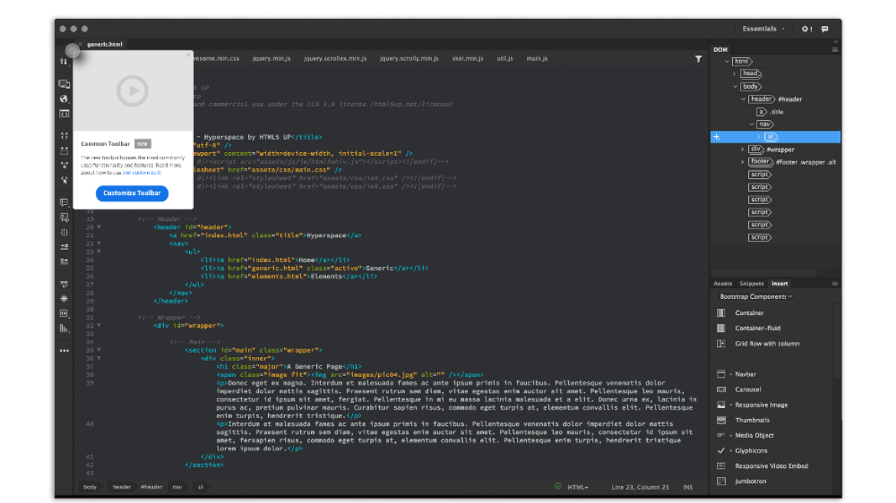

Rebuilding Dreamweaver CC
December 1997, Macromedia released Dreamweaver 1.0 for Mac. Which was followed by 1.2 for Windows in March 1998. 19 years is a long time, not just for Dreamweaver but for the web as a medium. The web is in this rapid flux of evolution and constant development. We started out with static web pages beautifully structured with tables, then moved onto building dynamic websites with responsive frameworks and now live in an age of immersive and interactive web experiences. The web is an evolution of our own efforts.
It’s a Marathon not a Sprint.
Over the years, the web evolved. And so did Dreamweaver with every update. The way designers, developers and stakeholders work together and build websites tremendously changed in terms of their approach, workflows and tools. Catering to these different workflows, multiple mediums and disparate personas was turning out to be a race with no definite finish line in sight. We realised, we could do better than trying to sprint to this delusive finish line. So instead, we decide to stop, catch a breath and run a marathon.
Last year, we sat down to rethink what Dreamweaver meant for the modern web designer and developer. What started out as our usual roadmap planning, turned into the most exciting roadmap discussion we’ve had so far.
Why and How?
At the core of this redesign journey, we looked at modernizing Dreamweaver not just a software but as a brand that it has evolved into. We spent time evaluating the current state of the web, Dreamweaver’s current market position, what is our core offering, who is our user, what do they love about Dreamweaver and what do they hate about it. At the end of this we identified 3 key areas of focus.
User Experience
We had decided to make a strong case for restructuring a powerful and widely. Used product, to make it more user friendly. With every design decision, we had to ensure that it really was going to be a valuable change for our existing users, with minimum learning effort and increased the ease of use. For this we stayed touch with product advisors and evangelists at each phase.
Features & Workflows
Dreamweaver’s code view lacked some of the more modern features and functionality that other editors offer. While the thought of building a new code view did cross our mind, we decided to integrate Adobe Brackets. Integrating Brackets gave us a jump start on modernizing our code view. But we didn’t just integrate Brackets as the new code view. We spent significant time and effort in improving it’s performance and also extending it’s functionality and features to some of Dreamweaver’s core capabilities. This was no ordinary plug and play. Our goal was to take the best of Brackets and Dreamweaver, to build a powerful environment for a developer.
Perception
We also have to deal with some perceptions challenges like — it writes bad code or Dreamweaver is not meant for pure coders. With the redesign we wanted to make sure we address some of these challenges and misconceptions around Dreamweaver.We are committed to ensuring the new Dreamweaver is faster than ever by focusing on it’s start time, document launch time and overall file handling, recovery and processing capabilities. We’ve set a high benchmark in terms of speed, performance and quality for this new version.
Design Details
Trying to rebuild a 19 year old product like Dreamweaver is no small task. It’s been pretty challenging getting to the first Beta release. As one of the designers who worked on this, I wanted to share some of the finer details that are going into this redesign process.
1. Designing with Personas
Dreamweaver caters to a spectrum of customers ranging from creative professionals and freelancers to students and enterprise setups. One of the challenges we face is, to ensure the features we build solve the right problems for the right user. To make sure we are traversing the spectrum of use cases, we often work with personas. It helps us identify a set of users who exhibit similar behavioural characteristics, which we in turn use to maps out use cases and summarise patterns.The new code hints is an example of how we took into consideration the needs of each persona. We redesigned the code hints to help students learn HTML elements, CSS properties and syntax. While at the same time ensured that a pro user could continue to work more efficiently with the new Javascript and PHP code hints.
2. Piping hot Feedback with a dash of Data
Should we deprecate this feature? On several occasions we have had to rely on data and usage patterns to determine if a feature was worth investing in or carrying forward. However for a product that has a history of 19 years, not everything is instrumented. One such example was the Find & Replace feature in Dreamweaver. With the redesign we wanted to merge the core functionality from Brackets with some of the unique capabilities in Dreamweaver. Sounds pretty straight forward. Expect that not everything in the feature was instrumented. We gather all the data and usage patterns that we could get our hands on. Identified the crucial links in the workflow which weren’t instrumented. We then reached out to users and engaged with them through a series of questions, polls, interviews and tests. This is just one of the many instances where we had to make informed decisions based on data as well as user feedback.
3. Piping hot Feedback with a dash of Data
The whole point of running a beta is to gather feedback early and to iterate faster. We wanted to make sure we build a communication channel for our users to provide feedback. We currently have forums, wishlists and other portals for them to engage. However we wanted to make it easier than having to leave the app and go to the browser. So we built a in app feedback widget powered by Uservoice to gather feedback from our users. Using this, a user can submit feedback, feature requests and bugs. But we didn’t stop there. Based on the features a user works with or the workflow he performs, the feedback widget contextually pops up to prompt questions for specific feedback. Hence making this a duplex channel to communicate.
4. Helping the Users, one change at a time
With this redesign all of our prior learn and help content is rendered useless. While we have a content plan in place to update all the help and learn resources, we felt it was necessary to help our users understand what has changed, what has been removed and what’s new. Again one of our core principles being — Keep the user in the app. To solve this we use our in app messaging system that contextually delivers feature information and guidance. Using this mechanism we aim at helping the user onboard with the new changes, discover and learn while using the product.
Some of the newly added feature screens
What’s Next?
The beta has received very positive and reassuring feedback. The journey has just begun. While we aggressively work on incorporating the feedback we receive, we are also ramping up our next update with shiny new features.